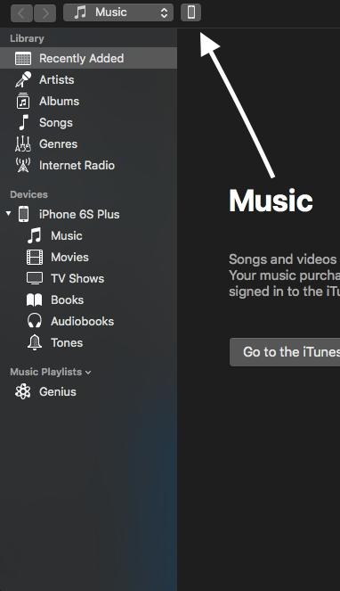
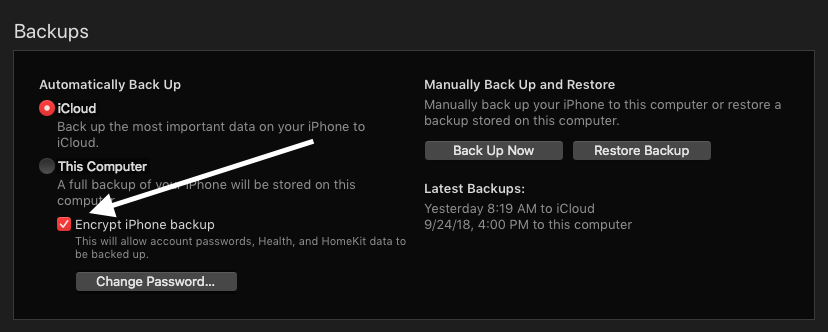

iTunes Backups
You must have a Mac or Windows PC to continue with the guide.
For this guide you will need the following;
- iOS Device
- Charge & Sync Cable for your iOS Device
- Mac or Windows PC with enough storage for a backup
- iTunes for Windows Users
- Windows Users may also opt to download iTunes from the Microsoft Store
macOS Catalina 10.15.X users must use the Finder app to backup and restore their device.
Step 1: Backing up with iTunes
- On a Mac, open up iTunes
- Connect your iOS Device with its Charge & Sync cable to your Mac or PC.
- Navigate to your iOS Device
- Check the box "Encrypt (iPad/iPhone/iPod Touch) Backup". You will be prompted to set a password.
- Click Back Up Now. This may take some time.
iTunes is preinstalled on Macs and will either be in the dock or on the launchpad. Windows users can download iTunes here.
You may need a USB-C to Lightning Cable for newer Macs.
If your device has been locked for more than an hour, you will be prompted to unlock your iOS device (iOS 12/13).


If you forget this password, you will not be able to restore your iOS Device with the backup.
Once the backup finishes, you can continue to the Jailbreaking Guide.
If you liked this tutorial, share it with others that are interested in jailbreaking their iOS Devices
Help the Jailbreak Guide out by contributing!